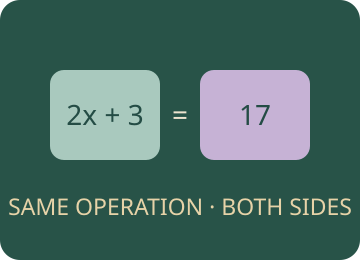

Algebra II
Translate, collect, expand and solve. Build expressions, collect like terms, expand brackets and solve equations with a balance of equivalent operations.

What will you learn?
- Translate words and situations into algebraic expressions before solving.
- Collect like terms and expand simple brackets.
- Solve one-, two- and three-step equations, first in N and then in Z.
- Solve equations with x on both sides, including an initial bracket.
Build the idea, one step at a time.
A variable is a symbol for a number that can change or is not yet known. An expression describes a quantity, while an equation states that two expressions are equal. A term is a part separated by addition or subtraction, a coefficient multiplies a variable part, and a constant term has no variable. Start by translating a story before trying to solve anything.
Collect only terms with the same letters and powers. Expand a bracket by multiplying every term inside, including its sign. To solve an equation, make equivalent equations: apply the same valid operation to both sides. N denotes the natural numbers used in the course, while Z includes positive and negative integers and zero. An integer solution can be negative even when an earlier exercise used only positive values.
01 · Collect terms by letter and power
Add coefficients of identical variable parts; keep unlike terms separate.
Underline the variable part before adding coefficients.
A term is one part joined to other terms by addition or subtraction. Its coefficient counts copies of its variable part. x, x² and x³ are different variable parts. A negative coefficient means a subtraction, not a negative physical length.
x coefficient: 3 + 2 = 5
02 · Expand every term in the bracket
Use the distributive law with positive and negative constants.
Draw one multiplication arrow from the outside factor to each term.
The outside factor multiplies every term inside the brackets, including each sign. Expansion changes how an expression is written while preserving its value for every x. Expanding is not the same task as solving an equation.
x coefficient 6 · constant -6
03 · Follow equivalent equations, one step at a time
Preserve equality by doing the same valid operation to both sides.
Do not move a term magically. Name the operation done to both sides.
An equation states that two expressions have equal value. A solution is an x value making the original equality true. Expand brackets, collect x terms on one side, remove constants and divide by the remaining coefficient when it is nonzero. The workbench below lets you choose your own operations.
x = 7
You can read these explanations without operating the simulator. The practical activities, games and revision below let you apply the ideas and check your reasoning.
Now investigate →Predict. Change. Explain.
Read the explanations, work on paper, then use the model to check a prediction. Practice here is separate from a recorded Test yourself quiz.
Compare, explain and try again
All instructions, models and worked examples are on this platform. Use “A little support” for a guided method, or “Go further” for extensions. Your working notes and lesson checks are not sent to the teacher.
Practise with boxes and brackets.
Play Like-Terms Recycling and Bag Factory, or revisit the detailed object models.
Ready to test your understanding?
Explore 90 questions for Algebra II. Select question areas and levels, practise with explanations or take Test yourself, then retry mistakes.